L2. DNA RNA Overview
2.1 Basic Structure
- Purines: Guanine & Adenosine are big
- Pyrimidines: Cytosine and Thymine are small
- Weak hydrogen bonds between them, 3 bonds for GC, 2 bonds for AT
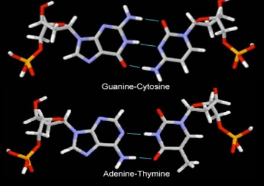
- Major groove (pink) and minor grooves (blue)
- Major grooves occur where the backbones (red) are far apart
- Minor grooves occur where they are close together
- Easier for DNA binding proteins to interact with the bases on the major grooves
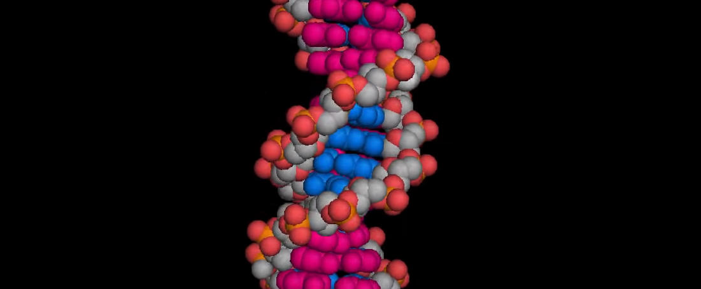
- Two strands of DNA are pointing opposite each other chemically, 5' (front) end and 3' (reverse) end
- All polymerases operate from 5' to 3' direction
2.2 Building blocks of DNA and RNA
- Nucleoside triphosphate is the molecule that is polymerised in order to make DNA and RNA
- DNA: sugar is deoxyribose; bases are ATCG
- RNA: sugar is ribose; bases are ACGU
- RNA is relatively unstable due to uracil, the unmethylated form of thymine (it is the first information storage of life)
- DNA is relatively stable due to thymine
- Nucleoside is sugar + base
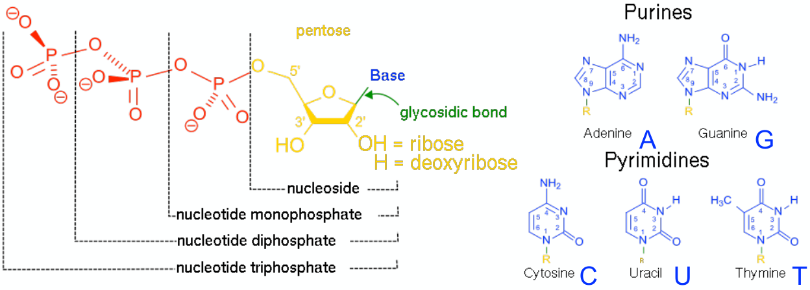
2.3 RNA Structural Diversity
- A single-stranded RNA molecule can base-pair with itself to form structures that are biochemically important
- Examples:
- Hammerhead ribozyme: RNA cutting RNA enzyme
- Transfer RNA a small RNA chain of about 80 nucleotides that transfers a specific amino acid to a growing polypeptide chain at the ribosomal site of protein synthesis during translation
2.4 Amino Acid Structure
- Basic end with amino group (N-terminus)
- Carboxyl group with (C-terminus)
- R-group, around 20 different side groups
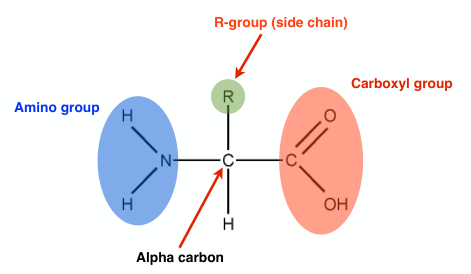
- Lysine and Arginine are basic to tend to bond well with nucleic acid, used by quiet a lot of binding proteins
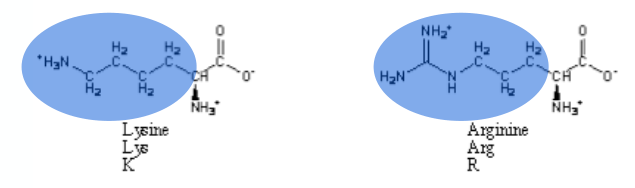
- Valine, Leucine, isoleucine, phenylalanine and methionine all have hydrophobic side chains
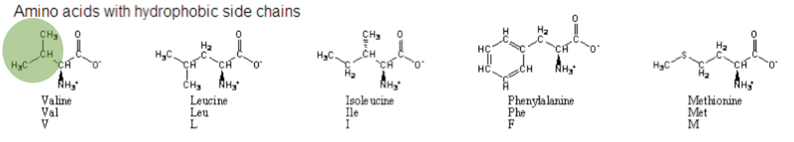
- Serine, Threonine, Cystenine all have hydroxyl groups, so it can bind with a phosphate ion.
- Used by kinase, which is an enzyme that catalyzes the transfer of phosphate groups between phosphate-donating molecules to substrates
- Having a phosphate added or removed switches on or off a protein
- Serine, threonine kinases
- Cystenine kinases
- Proline is has side chains that connect back to itself, which typically causes kinks in the chain
- Tryptophan has the largest side group
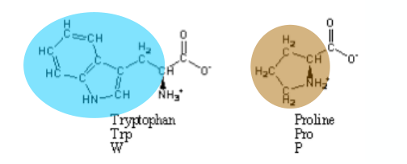
- Cysteine contains sulphur can form cross links between different parts of the protein
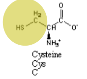
2.5 Peptide Bond
Peptide bonds are used to link two different amino acids through a dehydration reaction:
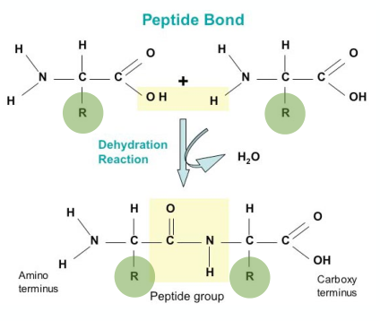
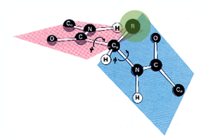
2.6 Protein Structures:
-
Primary structure refers to the three-dimensional arrangement of atoms in an amino acid-chain molecule
-
Secondary structure within the long protein chains there are regions in which the chains are organised into alpha=helices and beta-pleated sheets, held together by hydrogen bonds
-
Alpha helix:
- The protein chain is coiled like a loosely-coiled spring. "Alpha" meaning looking down the length of the spring, the coiling is happening in a clockwise direction
- All the R groups are sticking out sideways from the main helix
- Each complete turn of the spiral has 3.6 amino acid residues in it
-
Beta pleated sheets:
- Chains are folded so they lie alongside each other
- A beta strand is a stretch of polypeptide chain typically 3 to 10 amino acids along with backbone in an extended confirmation
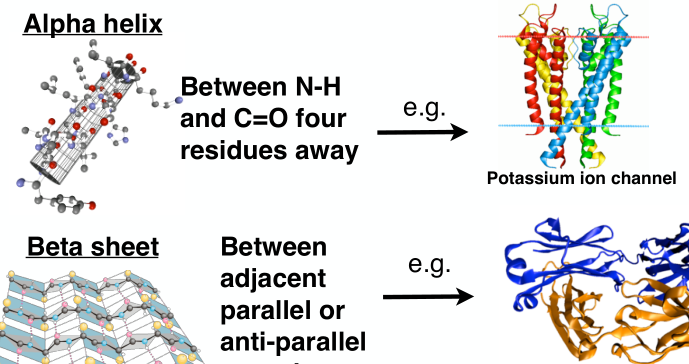
- Tertiary structure of proteins describes the way the whole chain (including secondary structure folds itself into its final 3-D shape)
- Quaternary structure is the number and arrangement of multiple folded protein subunits in a multi-subunit complex
- Haemoglobin tetramer is an example, with 2 a subunits and 2 b subunits. The binding of a oxygen changes the structure of the protein so adding non linearity in the molecule, making it more easily carrying a oxygen molecule given one oxygen already attached.
-
2.7 Lipids
- Have charged heads which like to associate with aqueous solutions and fatty tails that like to avoid water
- It may self-assemble into three structures: Liposome, Micelle and Bilayer sheet (often alpha helical)
- Cells are surrounded by a lipid bilayer membrane, this membrane barrier isolates the cell contents from the environment, similarly sub-cellular structures can be surrounded by lipid membranes.
L3. Evolution
3.1 Three-domain System
-
It is a biological classification (Carl Woese 1977) that divides cellular life forms into archaea, bacteria, and eukaryote domains. In particular, it emphasizes the seperation of prokaryotes into two groups.
-
Domain Archea
- Prokaryotic (Unicellular organism that lacks a membrane bound nucleus, mitochondria or any other membrane-bound organelle)
- Have three RNA polymerases like eukaryotes
- Have cell walls that lack peptidoglycan and have membranes that enclose lipids with hydroocarbons rather than fatty acids
- Typically extremophiles which have important roles in carbon and nitrogen cycles
- Matabolism and robustness useful in Biotechnology
-
Domain Bacteria
- Prokaryotic
- Behave less like eukaryotes with only one RNA polymerase
- Typically a fre in size
- Cell wall made of peptidoglycan
- React to antibiotics in a different way than archea
- Most of the known pathogenic prokaryotic organisms belong to bacteria
-
Domain Eukarya
- Eukaryotes (organisims that contain a membrane bound nucleus)
- In exhaustive list incudes: Fungi, plants, animals
-
Archea/prokaryotes have typically single circular chromosome with extrachromosomal elements called plasmids
- Plasmids form the basis for cloning vectors used genetic engineering to insert foreign DNA
- Plasmids are bad for microbial resistance as they typically carry one or to types of microbial resistance
3.2 Mitosis
-
Interphase:
- Where the cell spends the longest time doing
- Chromatin floats freely
-
Prophase:
- DNA replication occurs (actually during S phase)
- Chromatin condenses into chromosomes
- Nucleolus disappears
- Centromeres move to opposite ends of the cell
-
Metaphase:
- Chromosomes line up along the metaphase plate (imaginary plane)
- Micro-tubules attach to the chromosomes
-
Anaphase:
- Chromosomes break at centromeres and sister chromatids move to opposite ends of the cell
-
Telophase and Cytokinesis:
- Nuclear membrane reforms
(Nucleoli reappear, chromosomes unwind into chromatin) - Myosin II and actin filament ring contract to cleave cell into two (Cytokinesis)
- Chromosomes form back into chromatin
- Nuclear membrane reforms
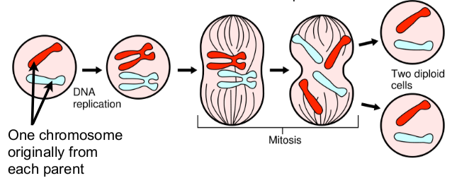
3.3 Meiosis
- Diploid cell: A cell that contains two sets of chromosomes
- Haploid cell: A a cell that contains half the usual number of chromosomes
- The goal of meiosis is to produce from a single diploid cell to four haploids.
Like mitosis, it needs to separate sister chromatids (two havles of duplicated chromosome). Also must separate homologous chromosomes, the similar but nonidentical chromosome pairs an organism receives from its parents. These goals are accomplished in meiosis using a two-step division process, homologue pairs separate during a first round of cell division meiosis I, sister chromatids separate during meiosis II.
-
Meiosis I
-
S-Phase where all of its chromosomes are replicated
-
Prophase I:
- As in mitosis the chromosomes begin to condense
- In meiosis I, they also pair up, each chromosome carefully aligns with its homologue partner
- Crossing over occurs helped by synaptonemal complex which holds the homologues together
- This causes the formation of new "remixed" chromosomes with unique combinations of alleles
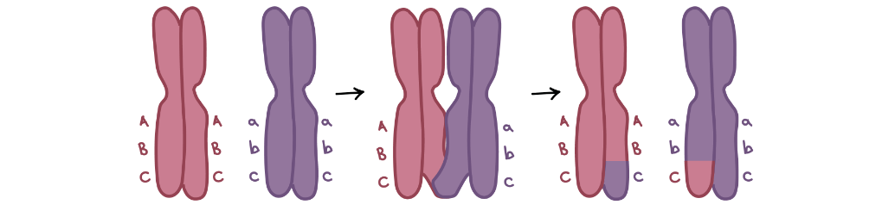
-
Metaphase:
- Spindle begins to capture chromosomes and move them towards the metaphase plate
- Each chromosome attaches to microtubules from just one pole of the spindle
- So homologue pairs, not individual chromosomes line up for separation
-
Annaphase I:
- Homologues are pulled apart and move apart to opposite ends of the cell
-
Telophase I and Cytokinesis similar as Mitosis forming two haploid cells
-
-
Meiosis II
- There is no S-phase in meiosis II
- Two haploid cells have just one chromosome from each homologue pair
- Prophase II:
- Chromosomes condense
- Nuclear envelopes breakdown (if needed)
- Metaphase II:
- Chromosomes line up individually along the metaphase plate
- Anaphase II sister chromatids separate and are pulled towards opposite poles
- Telophase II & Cytokinesis
L3. Central Dogma of Molecular Biology
3.1 Summary
- What is the material basis for heredity, the faithful storage & transmission of information from one generation to next?
- DNA encodes the information to produce proteins in terms of the specific sequence of the amino acids
- Genes can also encode functional RNAs
- What are the molecules/machinery and operating mechanisms that drive the information flow that generates the observed features of an organism?
- Two step precess with a RNA intermediate
- Transcription is DNA -> RNA
- Translation is RNA -> Protein
- Information flows from DNA to RNA to protein
3.2 Hershey & Chase Experiment 1952
- To address the molecule of heredity
- What people knew is viruses inject the molecule which codes for genetic information into the host cell for it to produce more viruses
- Suspects of this molecules is protein or DNA
- First experiment: all proteins in T2 phage are labelled with radio active sulphur
- The host E.coli is infested by T2 phage
- Observed that most radioactivity is recovered outside of E.coli
- Second experiment DNA of the T2 phage are labelled
- Experiment repeated, now most radioactivity discovered in bacteria
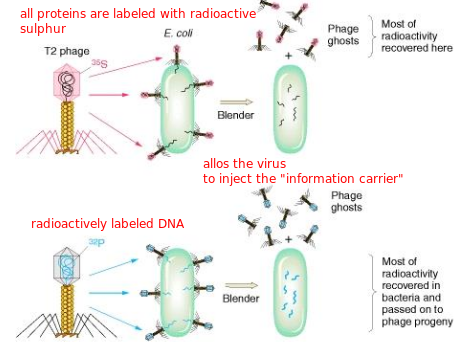
3.3 Semi-Conservative DNA Replication Model 1953
- There were three models for DNA replication: conservative, semi-conservative and dispersive.
- Meselson and Stahl confirmed that DNA is replicated semi-conservatively through the following experiment:
- Note that the semi-conservative model makes most sense as the two complementary strands of helix might separate during replication, each serving as a template for the construction of a new, matching strand
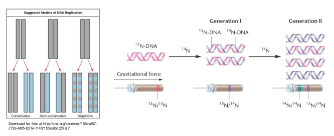
-
Experiment begins with growing E.coli in a medium containing only until all E.coli's nitrogenous bases were labeled with heavy nitrogen
-
Bacteria are then switched to medium containing light isotope and allowed to grow for several generations
-
Using density gradient centrifugation method, after each generation the content of the bacteria samples are measured
-
Generation 1:
- Also produced a single band when centrifuged
- However this band was higher, intermediate in density between the heavy and the light
- This means the DNA molecules made in the first round of replication was a hybrid of light and heavy DNA
- This canfirms that the replication process is either semi-conservative or dispersive
-
Generation 2:
- Produced two bands, one was in the same position as the intermediate band from the first generation
- Second was higher (appeared to be labelled only with )
- This confirms the semi conservative model since if dispersive, there would never any pure band forming
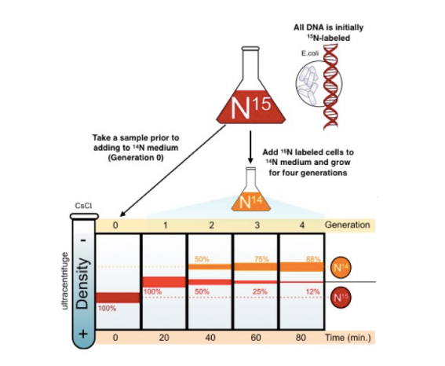
- The relative proportions of the / DNAs is defined as a geometric progression over the th generation:
And / proportion simply defined as:
3.4 Nucleoside VS Nucleotide
-
Nucleotide contains three things: sugar + base + phosphate
-
Nucleoside contains two things: sugar and base
-
When the 2' carbon is connected to only an H group, the sugar is called deoxiribose. If connected to an HO group, then it is called oxiribose
-
When the 4' carbon is connected to a triphosphate group, it is called nucleoside-triphosphate
-
Monomer subunits of DNA:
- Deoxyribonucleoside-triphosphate (dNTP)
- Consists of two purines dATP (deoxy adenosine tri-phosphate) and dGTP (deoxy guanosine tri-phosphate)
- Two pyrimadines dTTP (deoxy thymidine tri-phosphate) and dCTP (deoxy cytidine tri-phosphate)
-
dATP forms two hydrogen bonds with dTTP
-
dGTP forms three with dCTP
-
Polymerization of Nucleotides:
- The 5' group of a nucleotide triphosphate is held close to the free 3' hydroxyl group of a nucleotide chain
- The 3' hydroxyl group forms a bond to the phosphorus atom of the free nucleotide. Meanwhile, the bond between the first phosphorus atom and oxygen atom linking it to the next phosphate group breaks
- A new phosphodiester bond now joins the two nucleotides. A pyrophosphate group has been liberated
- Pyrophosphate group is hydrolysed, releasing energy and driving the reaction forward to completion
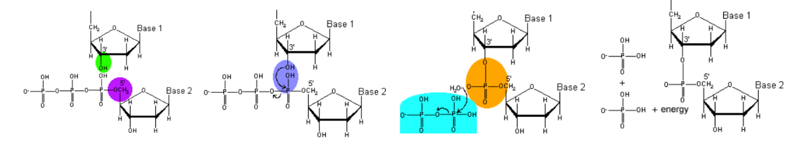
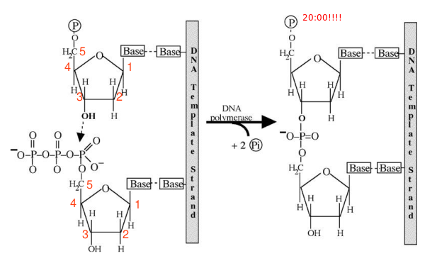
3.5 DNA Polymerases
- They only add on the 3' end, going from 5' to 3' direction
- Only when the correct base pair from the nucleoside triphosphate arrives would DNA polymerase catalyse the polymerization
- The polymerase itself has certain proofreading abilities
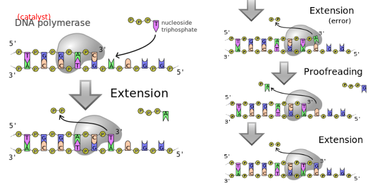
3.6 DNA Replication
- First, topoisomerase unwinds the double strand by releasing the strain energy through temporarily breaking up the phosphate backbone
- Helicase is used to break up the hydrogen bonds between the nitrogenous bases
- For the 5' to 3' strand (leading strand):
- RNA primer is added onto the beginning of the exposed nitrogenous bases by DNA primase
- DNA polymerase starts to add nucleotides on the 3' end
- For the 3' to 5' strand (lagging strand):
- RNA primer is added once several tens of exposed bases by the DNA primase
- DNA polymerase can then add nucleosides onto the 3' end
- These chunks are called Okazaki fragments
- Once all strands and fragments have been polymerised, the enzyme exonuclease removes all RNA primers
- Another DNA polymerase then fills in the gaps, leaving unconnected sugar phosphate backbones (nick site)
- Finally, enzyme ligase joins the sugar-phosphate backbones at each nick site completing replication
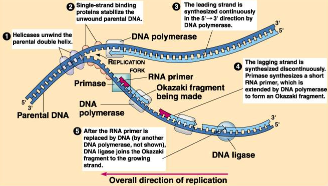
3.7 Transcription: Making of mRNA
- Gene:
- A continuous strand of nucleotides containing a region that codes for an RNA molecule
- Begins with a promoter (region) and ends with a terminator (region)
- Also contain regulatory sequences that can be found near the promoter or at a more distant location
- RNA polymerase binds to the promoter DNA
- RNA polymerase creates a transcription bubble which seperates the two strands of the DNA helix, done by breaking the hydrogen bonds between complementary DNA nucleotides
- During elongation, the RNA polymerase slides along the DNA strand
- RNA polymerase adds RNA molecules which are complementary to the nucleotides of the 5' to 3' strand
- RNA sugar-phosphate backbone forms with assistance from RNA polymerase to form an RNA strand
- Hydrogen bonds of the RNA-DNA helix break, freeing the newly synthesised RNA strand
- RNA is further processed through polyaldenylation (addition of poly(A) tail), capping and splicing (introns removed, exons joined)
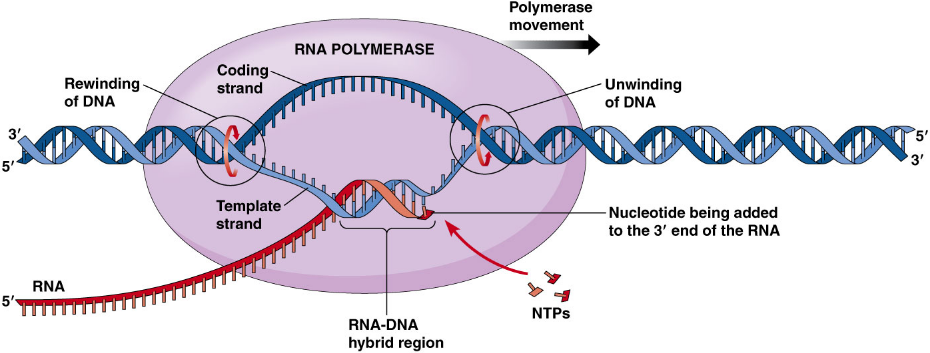
3.8 Translation: Making of Proteins
3.8.1 Condons and Codon Degeneracy
- A codon is a sequence of three nucleotides which together form a unit of genetic code in a DNA or RNA molecule
- Using 4 bases there are in total different combinations of amino acids, in reality however, there are only around 20
- This is due to the degeneracy of codons which is the redundancy of genetic code which prevents point mutation
3.8.2 Process of Translation
- Initiation:
- A ribosome, an mRNA and an initiator tRNA carrying the first amino acid (always methionine) in the protein arrives on the translation site forming an initiation complex
- In Eucaryotes, small ribosomal subunit binds with the mRNA 5' cap upstream of the 5' start codon
- The small complex then scans to find the start codon, once found the initiator tRNA forms complementary base pairs between its anti codons and the start codons on the mRNA
- Large ribosomal subunit binds with the initiator tRNA which completes the initiation process forming initiation complex
- Elongation
- There are three sites in the initiation complex, namely P,A,E site
- The first initiator tRNA occupies the P site, the next tRNA enters the A site which is complementary to the next codon on the mRNA
- The methionine forms peptide bonds with the next amino acid and the uncharged tRNA moves onto the E site which exits the complex
- The complex jerks forward and repeats the process until termination
- Termination
- Termination happens when a stop codon in the mRNA (UAA,UAG or UGA) enters the A site
- Stop codons are recognised by proteins called release factors which fit into the P site
- Release factors make the enzyme that normally for peptide bonds to add a water molecule to the last amino acid of the chain
- This reaction separates the chain from the tRNA, a newly made protein is released
L4. Control of Gene Expression
- Gene expression: the process of production of the protein encoded by an individual gene
- Gene expression: mechanisms to control whether or not the protein encoded by an individual gene is expressed
Case study: The Lac Operon
- Definitions:
- An operon is a functioning unit of DNA containing a cluster of genes under the control of a single promoter
- The promoter is the sequence where the RNA polymerase binds and begins transcription
- An operator is a regulatory sequence that a repressor can bind to, when it does the transcription process is halter by physically blocking the binding of the RNA polymerase to the promoter region

In the figure above, we see a sequence of DNA containing the lac operon under the promoter and the gene for repressor (genes are denoted in lowercase). Several cases of the expressions of the lac operon under different environments is described below:
No lactose:
- is transcribed into repressor proteins forming a tetramer which binds the operators of the lac operon
- This inhibits the binding between the lac operon promoter and RNA polymerase which halts transcription

Moderate to high level lactose with no glucose: Positive feedback
- Lactose enters cell membrane and is broken down by beta-galactosidase into allolactose which is a operon inducer together with glucose and galactose
- Allolactose binds with the repressors causing it to fall off the operators
- This enables RNA polymerase to bind onto the promoter and initiate the transcription of , and mRNAs
- codes for beta-galactosidase which in turn breaks down lactose to produce allolactose
- codes for permease which binds with the cell membrane to increase the permeability of the cell to beta-glactosides (causing faster breakdown of lactose) thereby causing a "positive feedback"
- codes for transacetylase which transfers an acetyl group from acetyl-CoA to glactosides


5.1 Gene Cloning
- Plasmids are removed from bacterial cells (E. coli) which serve as vectors typically include:
- Antibiotic resistance genes i.e. ampicillin resistance (), acting as a marker for later selection stage
- LacZ gene which is responsible for the blue colour, also acting as a marker
- Multiple cloning sites MCS which is the placeholder for the later inserted genes
- DNA containing the gene is also taken from the cell
- A restriction enzyme (restriction endonuclease) recognises its specific restriction site and cuts the DNA leaving overhangs called sticky ends
- The restriction enzymes also cut open the circular plasmids (using the same enzyme cuts out the gene of interest from its DNA molecule)
- The sticky ends of the restriction fragments attach to each other via base pairing, forming recombinant plasmids
- DNA ligase makes the bond permanent by attaching nucleotides to each other with phosphodiester bonds
- The plasmids are mixed with the bacteria through two main methods (all work like magic):
- Chemical transformaion
- wash cells in chilled to permeabilise the membrane
- 42 degrees heat shock to promote DNA uptake
- Transformation by electroporation
- wash cells in water to remove ions
- 5-20kV/cm shock promotes DNA uptake
- Both methods are followed by a recovery period in rich medium to allow time for expression of the antibiotic resistance gene
- Chemical transformaion
- Plasmids with an uninterrupted LacZ gene turn their bacteria blue (unsuccessful ligation)
- Both the recombinant plasmids where the inserted gene interrupts the Lac Z gene and the bacteria which did not take up any plasmids remain uncoloured
- Antibiotics are added, because the plasmid contains the genes for antibiotic resistance, only bacteria which took up the plasmid survive
- The uncoloured bacteria can then be allowed to reproduce
Limitations:
- Require very highly purified enzymes which is expensive
- Require restriction sites in the right places which is left to chance
5.2 PCR
5.3 Gene Cloning VS PCR
| Gene cloning | PCR | |
|---|---|---|
| Definition | Recombinant DNA is constructed invitro and is amplified invivo inside a bacterium |
DNA is amplified in vitro. No need for the construction of rDNA |
| Components | Restriction enzymes, DNA ligase, vector DNA and bacterial cells, markers (antibodies) |
Taq DNA polymerase or a thermostable one, RNA primers and free deoxyribonucleotides |
| Quantity required | At least a microgram of DNA | A nanogram of DNA |
| Post synthesis | A restriction enzyme is required for reisolation of the amplified DNA from rDNA |
No need for reisolation or use of enzymes |
| Time required | 2-4 days | Up to 4 hours |
| Error possibility | High error possibility | Low error possibility |
| Labour cost | Labour intensive | Fully automated (high set up cost) |